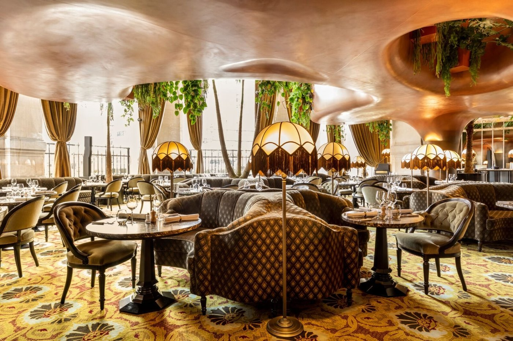
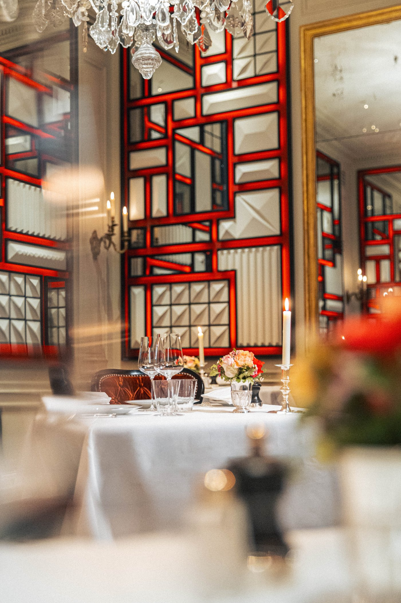
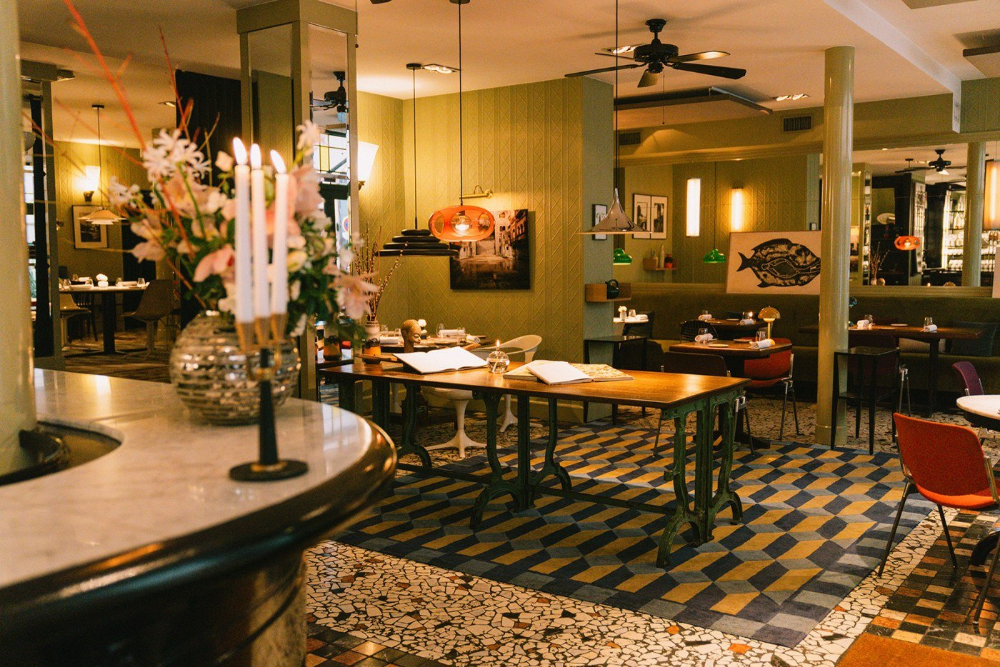
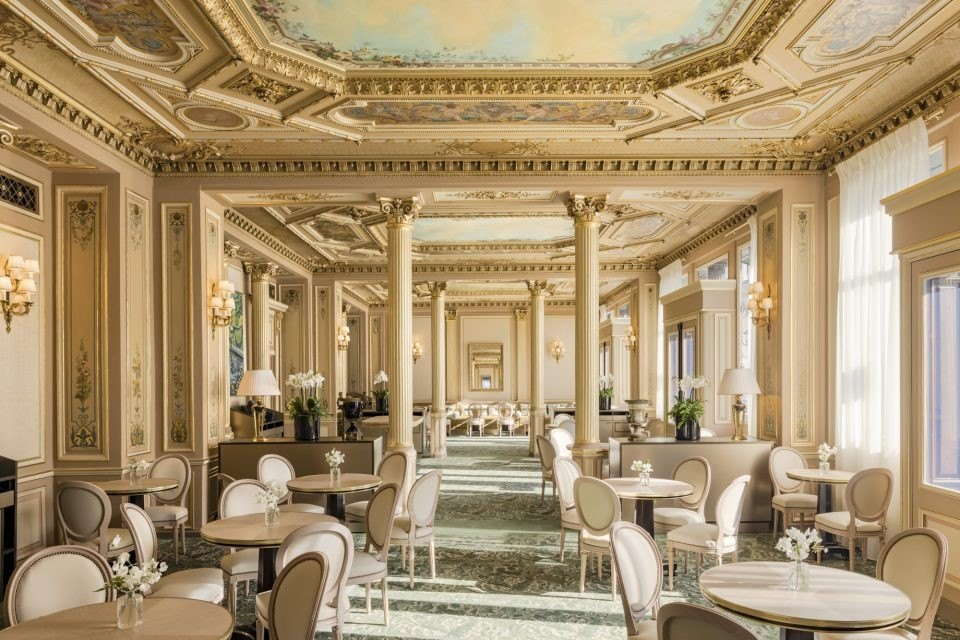
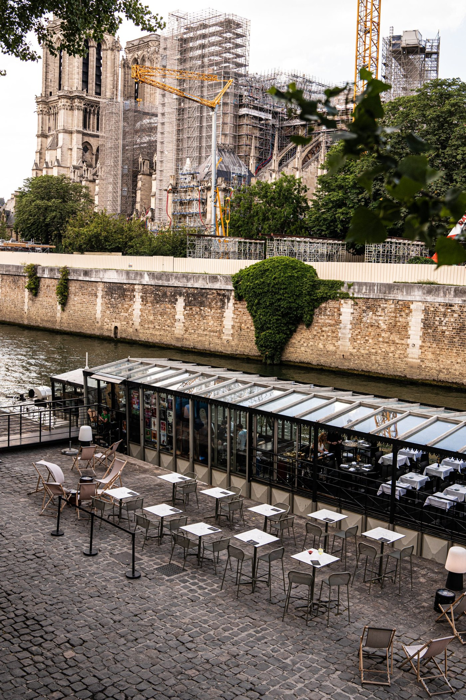

Dîner à deux à Paris : 10 tables en 2026
Une maison qui a perdu sa troisième étoile, une autre qui vient d'en gagner une deuxième, et deux adresses recommandées partout pour leur intimité qui n'en ont aucune.

Chercher une table pour un dîner à deux à Paris revient vite à recopier les mêmes dix noms. Le problème n'est pas la liste, c'est que ce qu'on en dit a cessé d'être vrai : étoiles gagnées ou perdues, chefs remplacés, adresses fausses, et deux maisons vendues comme intimes qui ferment à deux heures du matin.
L'essentielDîner à deux à Paris en 2026
- Un trois-étoiles dans cette sélection, Le Gabriel, et quatre deux-étoiles : L'Oiseau Blanc, Le Jules Verne, Virtus et L'Ambroisie.
- L'Ambroisie a perdu sa troisième étoile en 2026 après trente-sept ans, et son chef historique en 2025.
- Virtus a gagné sa deuxième étoile en mars 2026, et n'est pas rue de Prague mais rue de Cotte.
- CoCo et La Nouvelle Seine ne sont pas des tables intimes : musique live jusqu'à 2 h pour l'une, dîner calé sur un spectacle pour l'autre.
Ce que nous avons vérifié
Nous avons repris chaque adresse, chaque distinction et chaque contrainte de réservation aux sites officiels des maisons et au Guide Michelin 2026. Neuf des dix maisons ne publient pas leurs tarifs en ligne : nous ne leur en prêtons aucun, plutôt que de recopier des fourchettes sans source.
Ce qui ressort du contrôle, c'est l'ampleur du décalage. Les sélections de tables romantiques parisiennes en ligne ignorent presque toutes les trois étoiles du Gabriel, les deux de L'Oiseau Blanc, celles du Jules Verne, la promotion de Virtus et la rétrogradation de L'Ambroisie. Ce sont pourtant les seuls faits vérifiables d'un sujet qui, par nature, en compte peu. Le reste relève des critères de notre grille.
Les 10 tables
-
01
L'Oiseau Blanc
Paris 16e · Rooftop du Peninsula
2 étoiles MichelinAu sixième étage du Peninsula, la salle et la terrasse donnent sur un panorama à 360 degrés où la tour Eiffel occupe le premier rôle. La maison porte deux étoiles au Guide Michelin, la deuxième obtenue en 2022, sous la direction de David Bizet, avec Anne Coruble à la pâtisserie.
Le nom n'est pas décoratif : l'Oiseau blanc est le biplan à bord duquel Charles Nungesser et François Coli ont disparu en 1927 en tentant la première traversée de l'Atlantique nord d'est en ouest. Une réplique grandeur nature est fixée sur le toit de l'hôtel, au-dessus de la salle.
Ce qui peut décevoir : c'est un restaurant de palace, avec le service et le niveau sonore qui vont avec en pleine saison, et l'addition monte vite dès qu'on ouvre la carte des vins.
Pour qui ? Ceux qui veulent la vue et la table au même endroit, et acceptent d'y mettre le prix. Réservation par l'hôtel.
- AdresseThe Peninsula Paris, 19 avenue Kléber, 75116 Paris
- Distinction2 étoiles au Guide Michelin
- ChefDavid Bizet ; Anne Coruble à la pâtisserie
- Prixmenus non publiés en ligne
-
02
Lapérouse
Paris 6e · Salons privés, depuis 1766
260 ans en 2026
La devanture de Lapérouse, quai des Grands Augustins. Photo Lapérouse. La maison a ouvert en 1766 quai des Grands Augustins et fête ses 260 ans cette année. Sa singularité tient à une idée du premier propriétaire : transformer les chambres de domestiques du premier étage en petits salons privés. Ils existent toujours, avec leurs miroirs gravés, et ils sont la raison pour laquelle on vient ici plutôt qu'ailleurs.
La maison a rouvert après restauration avec Jean-Pierre Vigato en cuisine et Christophe Michalak à la pâtisserie : ce n'est donc pas une carte figée dans son décor, contrairement à ce qu'on lit souvent.
Ce qui peut décevoir : le lieu est très demandé et l'ambiance des salons privés se paie ; les tables de la salle principale n'offrent pas la même intimité.
Pour qui ? Ceux qui veulent un décor de roman plutôt qu'une vue. Demandez explicitement un salon à la réservation.
- Adresse51 quai des Grands Augustins, 75006 Paris
- CuisineJean-Pierre Vigato ; pâtisserie Christophe Michalak
- À demanderun salon privé, à préciser lors de la réservation
- Prixcarte non publiée en ligne
-
03
Le Jules Verne
Paris 7e · Deuxième étage de la tour Eiffel
2 étoiles Michelin 2026Frédéric Anton
La salle du Jules Verne, au deuxième étage de la tour Eiffel. Photo Le Jules Verne. Frédéric Anton, élu cuisinier de l'année 2025 par Gault&Millau, tient cette table à 125 mètres de hauteur, au deuxième étage de la tour, desservie par un ascenseur privé. Elle porte deux étoiles au Guide Michelin 2026, ce que la plupart des sélections omettent.
Il n'y a pas de carte : uniquement des menus dégustation, cinq services à partir de 295 € et sept services à partir de 330 €, midi et soir. C'est nettement au-dessus des fourchettes de 180 à 250 € qui circulent, et il vaut mieux le savoir avant de réserver.
Deux contraintes pratiques : les réservations ouvrent quatre-vingt-dix jours à l'avance, et les créneaux du coucher de soleil partent en quelques minutes ; la veste est obligatoire pour les hommes.
Pour qui ? Une seule fois, pour une occasion qui le justifie. Ce n'est pas une table d'intimité mais un lieu de spectacle.
- Adressetour Eiffel, 2e étage, avenue Gustave Eiffel, 75007 Paris
- Distinction2 étoiles au Guide Michelin 2026
- Menus5 services à partir de 295 €, 7 services à partir de 330 €
- Réservationouverte 90 jours à l'avance ; veste obligatoire
-
04
CoCo
Paris 9e · Dans le Palais Garnier
Ouvert jusqu'à 2 h
La salle de CoCo, au Palais Garnier. Photo CoCo. Installé dans la rotonde du Palais Garnier, entrée place Jacques Rouché et non place de l'Opéra, CoCo joue une carte années 1920 : plafond cuivré, banquettes, abat-jour, végétation. Le décor est spectaculaire et la maison est ouverte tous les jours de 8 h 30 à 2 h du matin.
Une mise au point s'impose, car cette adresse est souvent recommandée pour un dîner intime : ce n'est pas ce qu'elle est. La maison programme de la musique live, l'ambiance est festive et le niveau sonore va avec. C'est une très belle adresse, mais pour un dîner où l'on parle, ce n'est pas celle-là.
L'autre erreur qui circule : la réservation ne passe pas par l'Opéra de Paris. CoCo est un restaurant indépendant, avec sa propre réservation.
Pour qui ? Les soirées où l'on veut sortir plutôt que se recueillir, les fins de spectacle, les tablées.
- Adresse1 place Jacques Rouché, 75009 Paris, Palais Garnier
- Ouverturetous les jours, de 8 h 30 à 2 h
- Ambiancemusique live, festive ; à éviter pour un dîner au calme
- Prixcarte non publiée en ligne
-
05
L'Ambroisie
Paris 4e · Place des Vosges
2 étoiles Michelin depuis 2026
La salle de L'Ambroisie, place des Vosges. Photo L'Ambroisie. C'est la table de cette page dont l'actualité a le plus bougé, et aucune sélection ne le dit. L'Ambroisie a perdu sa troisième étoile en 2026, après trente-sept ans de suite au sommet : elle était le plus ancien trois-étoiles de Paris. Elle en garde deux.
L'autre changement est intérieur. Bernard Pacaud, qui a tenu la maison pendant quarante ans, a passé la main en 2025 à Shintaro Awa, quarante ans, formé chez lui. La cuisine reste celle du répertoire classique français, sauces longues et produits nobles, mais elle est désormais signée par quelqu'un d'autre.
La salle, sous ses miroirs et ses tapisseries, garde son formalisme : c'est solennel, silencieux, et cela ne convient pas à tout le monde.
Pour qui ? Les amateurs de cuisine classique française qui veulent voir ce que devient la maison. Prévoir un budget élevé et une tenue en conséquence.
- Adresse9 place des Vosges, 75004 Paris
- Distinction2 étoiles au Guide Michelin, après la perte de la troisième en 2026
- ChefShintaro Awa, successeur de Bernard Pacaud depuis 2025
- Prixcarte non publiée en ligne
-
06
Virtus
Paris 12e · Près du marché d'Aligre
2 étoiles Michelin depuis mars 2026
La salle de Virtus, rue de Cotte. Photo Virtus. Deux corrections à faire d'entrée, parce qu'elles circulent partout. L'adresse est le 29 rue de Cotte, à deux pas du marché d'Aligre, et non rue de Prague. Et la maison n'a plus une étoile mais deux, la seconde obtenue en mars 2026, huit ans après la première.
Frédéric Lorimier est en cuisine, Camille Gouyer en salle. Le décor, signé de l'architecte argentin Marcelo Joulia, tient de l'appartement parisien plus que du restaurant : sol en damier, détails Art déco, façade bleu marine.
Conséquence directe de la deuxième étoile : les fourchettes de 90 à 150 € qu'on lit encore sont périmées, et la réservation est devenue difficile. La maison ne publie pas ses tarifs en ligne.
Pour qui ? Ceux qui cherchent une grande table sans le décorum de palace. Petite salle, réservez très en avance.
- Adresse29 rue de Cotte, 75012 Paris
- Distinction2 étoiles au Guide Michelin, la seconde en mars 2026
- ÉquipeFrédéric Lorimier en cuisine, Camille Gouyer en salle
- Prixmenus non publiés en ligne
-
07
Le Gabriel
Paris 8e · La Réserve Paris
3 étoiles MichelinLa table la plus distinguée de cette page, et la seule à trois étoiles : Jérôme Banctel les a obtenues le 18 mars 2024, et le guide 2026 les confirme. Le restaurant occupe un hôtel particulier Napoléon III réhabilité par Jacques Garcia, à deux pas des Champs-Élysées ; la salle est habillée de cuirs dorés espagnols et de parquet de Versailles.
Banctel, Breton, propose deux menus dégustation : Virée, hommage à sa région d'origine, et Périple, qui passe par le Japon et par la Turquie, dont il a rapporté des cuissons à l'eau de chaux.
La salle est petite, ce qui explique à la fois l'intimité réelle du lieu et la difficulté d'y obtenir une table.
Pour qui ? L'occasion qui se prépare des semaines à l'avance. Ce n'est pas une adresse de dernière minute.
- AdresseLa Réserve Paris, 42 avenue Gabriel, 75008 Paris
- Distinction3 étoiles au Guide Michelin depuis mars 2024
- ChefJérôme Banctel
- Menus« Virée » et « Périple » ; tarifs non publiés en ligne
-
08
Hôtel Particulier Montmartre
Paris 18e · Jardin de 900 m²
Sans enseigne sur la rueC'est l'adresse la plus discrète de cette page, au sens propre : aucune enseigne ne l'annonce depuis la rue. On y accède par un passage pavé, avenue Junot, et l'on débouche sur un hôtel particulier posé au milieu d'un jardin privé de 900 m², en plein Montmartre.
La maison abrite cinq suites, trois salons, un restaurant et le bar Le Très Particulier, ouvert du mardi au samedi de 18 h à 2 h. On y dîne dans les salons ou au jardin selon la saison.
Un point à vérifier avant de venir : les horaires du restaurant varient selon les sources et selon les saisons, entre un service quotidien et une ouverture réduite aux soirées de fin de semaine. Appelez plutôt que de vous fier à une liste.
Pour qui ? Ceux qui préfèrent un jardin à une vue, et un lieu qu'on trouve difficilement à un lieu qu'on montre.
- Adresse23 avenue Junot, 75018 Paris ; accès par le passage
- Le lieuhôtel particulier, jardin privé de 900 m², cinq suites
- BarLe Très Particulier, du mardi au samedi de 18 h à 2 h
- Bon à savoirhoraires du restaurant à confirmer par téléphone
-
09
Café de la Paix
Paris 9e · Face au Palais Garnier
Ouvert en 1862Plafonds classés
Un salon du Café de la Paix, place de l'Opéra. Photo Jérôme Galland pour le Café de la Paix. Ouvert en 1862 avec le Grand Hôtel, aujourd'hui l'InterContinental Paris Le Grand, le Café de la Paix occupe l'angle de la place de l'Opéra. Ses plafonds et ses colonnes sont classés monuments historiques : c'est le décor Second Empire dans son état d'origine, et il n'a pas d'équivalent parisien.
En cuisine, Laurent André, passé par la maison Ducasse. La carte tient le registre de la grande brasserie de luxe plutôt que celui de la table gastronomique, ce qui est cohérent avec le lieu.
Une précision d'adresse : la maison se présente au 5 place de l'Opéra, et non boulevard des Capucines comme on le lit parfois, même si le bâtiment fait l'angle.
Pour qui ? Ceux qui veulent le décor sans le protocole d'une table étoilée. La terrasse sur la place vaut autant que la salle.
- Adresse5 place de l'Opéra, 75009 Paris
- Le lieuouvert en 1862 ; plafonds et colonnes classés monuments historiques
- ChefLaurent André
- Prixcarte non publiée en ligne
-
10
La Nouvelle Seine
Paris 5e · Péniche théâtre, face à Notre-Dame
Théâtre et restaurant
La péniche de La Nouvelle Seine, quai de Montebello. Photo Laurence Guenoun pour La Nouvelle Seine. L'adresse est 3 quai de Montebello, dans le 5e, et non dans le 4e comme on le recopie : la péniche est amarrée rive gauche, face à Notre-Dame. Elle abrite depuis 2013 un théâtre d'humour et de stand-up de cent quinze places et un restaurant sous verrière, avec une terrasse sur le fleuve.
C'est le point que les sélections romantiques oublient : ici, le dîner est adossé au spectacle. Les formules associent une place de théâtre et deux plats, et l'horaire du repas est calé sur celui de la représentation. Ce n'est pas un restaurant qu'on choisit pour la carte, c'est une soirée qu'on choisit en bloc.
La cuisine suit les saisons, avec des résidences de cuisiniers qui changent la carte au fil de l'année.
Pour qui ? Ceux qui veulent une soirée plutôt qu'un repas, et la vue sur Notre-Dame en prime. Fermé le lundi, et pas de service le midi du mardi au samedi.
- Adresse3 quai de Montebello, 75005 Paris
- Le lieupéniche, théâtre de 115 places et restaurant sous verrière
- Ouverturefermé le lundi ; pas de service le midi du mardi au samedi
- Formuledîner-spectacle, horaire calé sur la représentation

Intime ne veut pas dire spectaculaire
La confusion la plus fréquente sur ce sujet consiste à ranger sous le même mot deux choses opposées. Une table intime est petite, calme, et permet une conversation : ce sont ici les salons privés de Lapérouse, la salle du Gabriel, celle de Virtus. Une table spectaculaire offre un décor ou un panorama, et suppose au contraire du monde, du bruit et du mouvement : Le Jules Verne, CoCo, le Café de la Paix.
Les deux sont légitimes, mais elles ne conviennent pas à la même soirée. Choisir CoCo pour un dîner où l'on veut se parler, c'est se tromper de lieu, pas de qualité. La question à se poser avant de réserver n'est donc pas « quelle est la plus belle table », mais « veut-on regarder ou parler ».
Pour la Saint-Valentin
Trois choses à savoir si vous visez le 14 février. D'abord le délai : Le Jules Verne ouvre ses réservations quatre-vingt-dix jours à l'avance, soit à la mi-novembre pour la Saint-Valentin suivante, et les créneaux de fin de journée partent en quelques minutes. Virtus et Le Gabriel, avec leurs petites salles, se réservent également plusieurs semaines à l'avance.
Ensuite les menus. Nous ne publions pas de liste de menus Saint-Valentin : à la fin du mois d'août, aucune des dix maisons n'a annoncé sa carte du 14 février 2027, et recopier les tarifs de l'an dernier reviendrait à inventer. Appelez en janvier, c'est le seul moyen d'avoir le prix réel.
Enfin la date elle-même. Le 14 février 2027 tombe un dimanche, jour où plusieurs de ces maisons ne servent pas : La Nouvelle Seine ne fait pas de service le midi, l'Hôtel Particulier Montmartre a des horaires variables. Vérifiez avant de fixer l'heure.
Les 10 tables en un tableau
Classées par distinction au Guide Michelin 2026, puis par ancienneté. Les prix ne figurent pas dans ce tableau parce que neuf maisons sur dix ne les publient pas.
| Table | Arrondissement | Guide Michelin 2026 | Le lieu | En cuisine |
|---|---|---|---|---|
| Le Gabriel | 8e | 3 étoiles Michelin | Petite salle, hôtel particulier Jacques Garcia | Jérôme Banctel |
| L'Oiseau Blanc | 16e | 2 étoiles Michelin | Rooftop, panorama à 360° | David Bizet |
| Le Jules Verne | 7e | 2 étoiles Michelin | Tour Eiffel, 125 m ; menus de 295 à 330 € | Frédéric Anton |
| Virtus | 12e | 2 étoiles Michelin | Deuxième étoile en mars 2026 ; petite salle | Frédéric Lorimier |
| L'Ambroisie | 4e | 2 étoiles Michelin | Troisième étoile perdue en 2026 | Shintaro Awa |
| Lapérouse | 6e | Aucune | Salons privés depuis 1766 | Jean-Pierre Vigato |
| Café de la Paix | 9e | Aucune | Plafonds classés monuments historiques | Laurent André |
| Hôtel Particulier Montmartre | 18e | Aucune | Jardin privé de 900 m², sans enseigne | Non communiqué |
| CoCo | 9e | Aucune | Palais Garnier, musique live, ouvert jusqu'à 2 h | Non communiqué |
| La Nouvelle Seine | 5e | Aucune | Péniche théâtre, dîner-spectacle | Résidences de cuisiniers |
Questions fréquentes
Quelle est la table la plus distinguée de cette sélection ?
Le Gabriel, à La Réserve Paris, 42 avenue Gabriel : trois étoiles au Guide Michelin depuis mars 2024, sous la direction de Jérôme Banctel. Viennent ensuite quatre maisons à deux étoiles : L'Oiseau Blanc au Peninsula, Le Jules Verne à la tour Eiffel, Virtus dans le 12e et L'Ambroisie place des Vosges.
Quelles tables ont changé de statut en 2026 ?
Deux, et elles vont en sens inverse. L'Ambroisie a perdu sa troisième étoile après trente-sept ans, et son chef : Bernard Pacaud a passé la main à Shintaro Awa en 2025. Virtus a gagné sa deuxième étoile en mars 2026, huit ans après la première. Les sélections en ligne n'ont enregistré ni l'une ni l'autre.
Combien coûte un dîner dans ces maisons ?
Une seule publie ses tarifs : Le Jules Verne, avec un menu en cinq services à partir de 295 € et en sept services à partir de 330 €, midi et soir. Les neuf autres ne publient rien en ligne, et nous ne leur prêtons donc aucun prix. Les fourchettes de 20 à 320 € qui circulent sur ces maisons n'ont pas de source, et celle qui donne Le Jules Verne à 180-250 € est très en dessous du tarif réel.
Quelle table choisir pour un dîner vraiment intime ?
Lapérouse, quai des Grands Augustins, pour ses salons privés du premier étage, à demander explicitement à la réservation. Le Gabriel et Virtus ont de très petites salles. À l'inverse, deux adresses souvent recommandées pour l'intimité ne s'y prêtent pas : CoCo, au Palais Garnier, programme de la musique live et ferme à 2 h du matin ; La Nouvelle Seine est une péniche de théâtre où le dîner est calé sur l'horaire du spectacle.
Quelles tables ont une vue sur Paris ?
Trois seulement. Le Jules Verne, au deuxième étage de la tour Eiffel, à 125 mètres. L'Oiseau Blanc, au sixième étage du Peninsula, avec un panorama à 360 degrés. La Nouvelle Seine, amarrée quai de Montebello, face à Notre-Dame. Les autres jouent le décor plutôt que le panorama : les plafonds classés du Café de la Paix, les salons de Lapérouse, le jardin de l'Hôtel Particulier Montmartre.
Faut-il réserver longtemps à l'avance ?
Oui, et pas seulement pour la Saint-Valentin. Le Jules Verne ouvre ses réservations quatre-vingt-dix jours à l'avance et les créneaux du coucher de soleil partent en quelques minutes. Virtus, depuis sa deuxième étoile de mars 2026, et Le Gabriel, avec sa petite salle, se réservent plusieurs semaines à l'avance. Pour le 14 février, comptez un mois et demi sur ces trois maisons.
Y a-t-il un code vestimentaire ?
Le Jules Verne exige une tenue élégante et la veste est obligatoire pour les hommes. L'Ambroisie et Le Gabriel appliquent le même usage sans toujours l'écrire. Les autres maisons demandent une tenue correcte sans exigence particulière. En cas de doute, la question se pose au téléphone à la réservation, elle ne se devine pas.
Sources
Adresses, distinctions, équipes et conditions de réservation relevées le 31 août 2026 sur les sites officiels des maisons et sur les pages ci-dessous.
- Guide Michelin, les distinctions 2026 du Gabriel, de L'Oiseau Blanc, du Jules Verne, de Virtus et de L'Ambroisie.
- L'Ambroisie, la succession de Bernard Pacaud par Shintaro Awa.
- Lapérouse, Le Jules Verne, Virtus, Café de la Paix, Hôtel Particulier Montmartre, CoCo et La Nouvelle Seine, sites officiels.
- La Réserve Paris et The Peninsula Paris, pour Le Gabriel et L'Oiseau Blanc.
Une distinction obtenue ou perdue, un chef qui change, un horaire qui bouge : signalez-le nous. Les corrections sont datées sur la page.
À lire aussi
À l'échelle de la capitale, notre palmarès des 25 meilleurs restaurants de Paris. À l'échelle du pays, le palmarès des 15 meilleurs restaurants de France.
Pour le lendemain matin, notre guide du meilleur brunch à Paris, et pour un dîner nettement moins cérémonieux, nos 8 meilleures adresses ramen de Paris.
Les photographies d'établissement sont fournies par les maisons et publiées avec leur accord. Toute maison souhaitant le retrait d'une image peut nous écrire : elle est retirée sans délai. Aucune des maisons citées dans cet article n'a été visitée par la rédaction à ce jour.